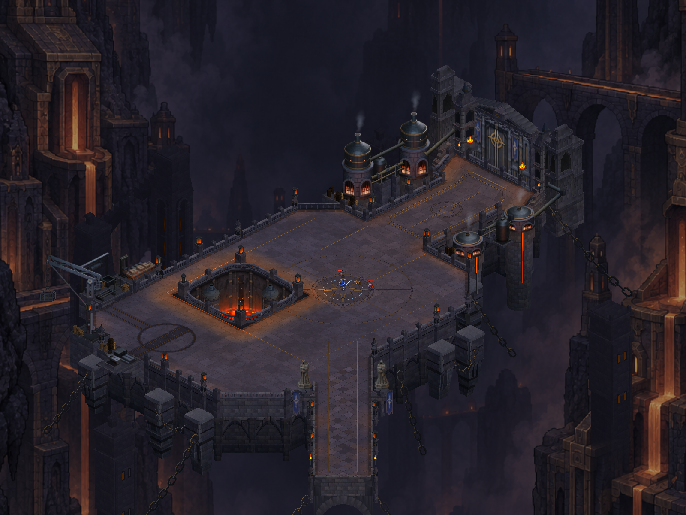

CRYPTFORGE · ACTUAL UNITY CAPTURES
Distant furnace architecture
The two north towers now have recessed arched furnace bays, dressed frames, stepped shoulders and a broken connecting span with clearer supports. Their subdued atmosphere keeps the playable court in front.
Verified: 1,009 tests passed. Actual Unity visual review accepted; Android APK ready. Phone installation and review pending.

After · actual Unity capture.
Tower and broken span
Matched detail cameras reveal the architectural treatment and its separation from the foreground. Recesses should read as part of the building, without bright windows competing with combat.
From the north walking lane
Production camera width, staged actor, hidden HUD. Both phases use the same casting portrait camera. Check that distant architecture stays behind the workbench and leaves the actor easy to find.
Complete map before · Complete map after · Casting detail before · Casting detail after · Scope and verification notes